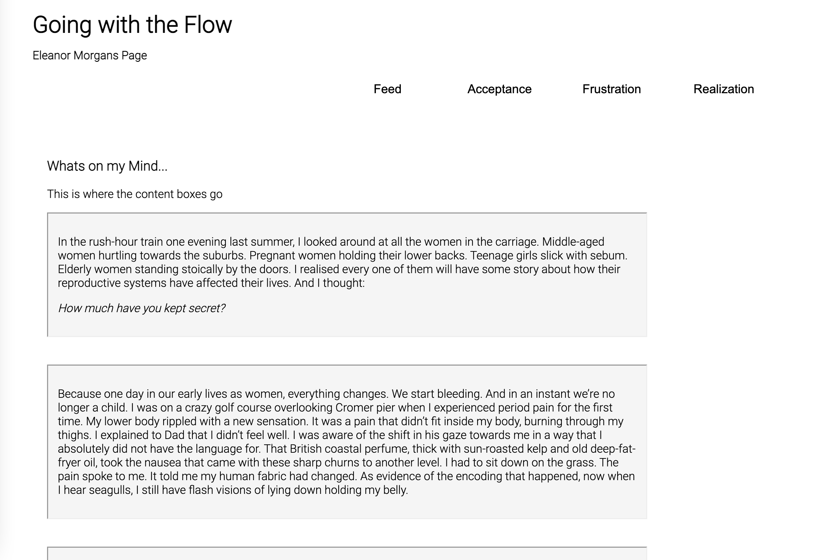
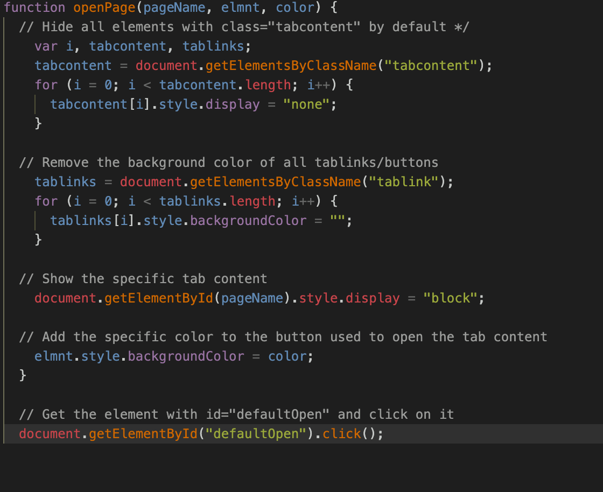

In order to pursue and further develop the idea of this project, I gathered further notes, a mock code, code snippets and describe newly implemented concept that I will be following.
Code snippet for the Tabs and how the work.
I plan on adding code for interactions within the div boxes and text to lead to other boxes within other tabs to create a 'flow' which adheres to the theme I have goin on.
Notes:
Additions I would like to make in the later drafts is the font choice ( I plan on sticking to only 1)
The color red is going to be in this site somewhere and I want it to be done in a very minimal way ( as that is the theme of this page )
Inset border boxes (acheived) but now I need these boxes to be collapsible upon click of a word or sentence in the text.
I need to decide how the text leads to each other and how I will be doing that. ( I am probably going to be doing it at the end since its just plugging test in and playing with the links and colors )
Different elements in each tab or div box to put emphasis on certain things, for example, the frustrations tab can feel like your navigating through the shadows for the text with the curosr or scrolling if you're on mobile )
IMPORTANT: I need to figure out how to make the outline of the tab buttons (ask IAN or ZACK)